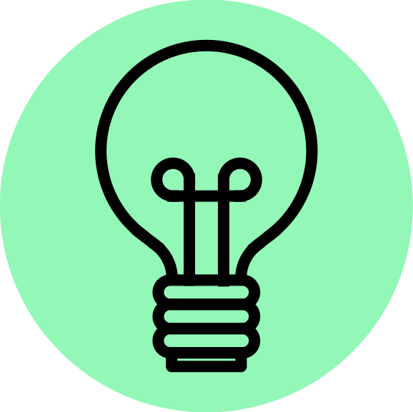

Dedicated to Closing the Queer Digital Divide.
|
Digital spaces haven't been built for queer people. Rampant homophobia on social networks, transphobia in language models, and the marginalization of queer engineers are all the results of a disregard of queer people in tech, itself just one front of the broader struggle for queer rights worldwide. We are the Queer Digital Front. |
Our Goals:
AccessEnsuring that digital spaces are accessible and hospitable to queer people |
Aid
Building digital tools to solve issues affecting the queer community |
AbilityTraining and supporting queer engineers, and promoting digital literacy in queer people |